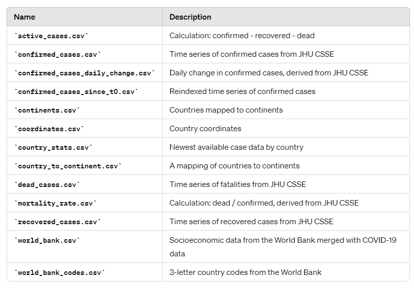
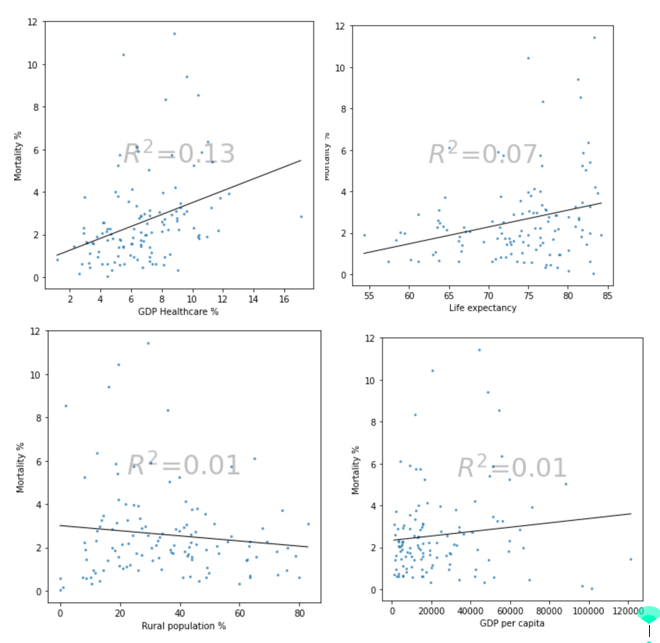
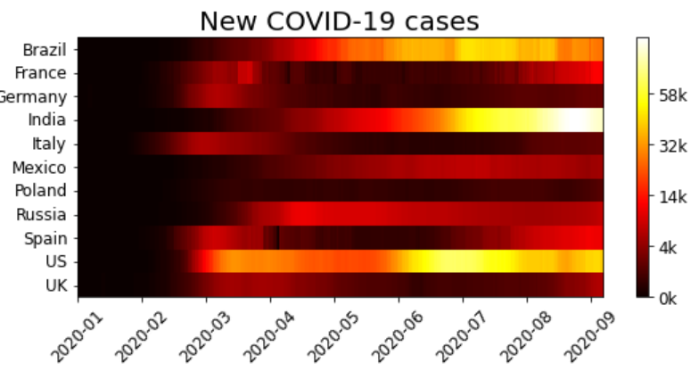
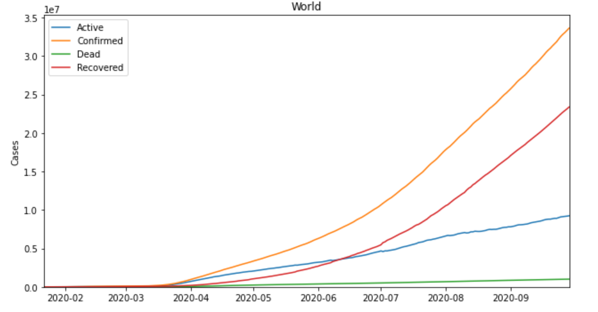

Portfolio
saiteja reddy vangumalla
Overview of COVID-19 Data Analysis Project
Goal
The primary goal of this project is to visualize various aspects of the COVID-19 pandemic using comprehensive datasets that encompass case data, socioeconomic indicators, and geographical information.
Data Sources
COVID-19 Case Data
Source: JHU CSSE GitHub Repository
Description: Time series data of confirmed, recovered, and fatal cases of COVID-19, segmented by country and region.
Socioeconomic Data
Source: The World Bank
Indicators: GDP per capita PPP, Population, Urban Population, Population living in slums, Rural population, Life expectancy at birth, Current healthcare expenditure.
Geographical Data
Source: Datahub
Description: Country and continent codes.
Data Wrangling
COVID-19 Data
• Original Data:Downloaded from the JHU CSSE GitHub repository, with each region in separate rows. The data is grouped by country and rows for cases on boats are removed.
• Derived Data:
Mortality Rate: Calculated as dead / confirmed.
Active Cases: Calculated as confirmed - recovered - dead.
Daily Change in Cases: Derived by applying a differencing operator to confirmed cases.
Scripts: See src/features/make_cases.py for processing details.
World Bank Data
• Original Data: Downloaded using the wbdata library, including various socioeconomic indicators.
• Extraction: The last known value of each indicator for a given country is extracted.
Scripts: See src/features/make_world_bank.py for processing details.
Continent Mapping
• Data: Lists of countries with their respective continents and three-letter codes are downloaded and processed.
Scripts: See src/features/make_continent.py for processing details.
Processed Data Files
After data cleaning, preparation, and joining, the processed datasets are stored in the data/processed directory. Below is a brief description of the contents of each file:

Exploratory_analysis_socioeconomic
Objective
Exploring the relationship between COVID-19 impact and various socioeconomic indicators.
Key Steps
Data Loading: Load COVID-19 case data and World Bank socioeconomic data.
Data Cleaning: Clean and preprocess the datasets to ensure they can be merged and analyzed together.
Exploratory Analysis:
• Correlation analysis between COVID-19 cases and indicators such as GDP per capita, population density, healthcare expenditure, etc.

• Identifying patterns and insights on how socioeconomic factors affect COVID-19 outcomes.

Gains
• Understanding Correlations: Insights into how socioeconomic factors like GDP per capita, population density, healthcare expenditure, and urbanization correlate with COVID-19 cases and mortality rates.
• Policy Implications: Identification of vulnerable regions based on socioeconomic indicators, which can inform targeted policy interventions and resource allocation.
• Predictive Insights: Basis for developing predictive models that incorporate socioeconomic variables to forecast COVID-19 spread and impact.
Exploratory_analysis_fancy_plot
Objective
Creating advanced and visually appealing plots to illustrate various aspects of the COVID-19 data. It aims to present the data in an insightful and aesthetically pleasing manner.
Key Steps
Data Loading: Load the processed COVID-19 datasets.
Visualization Techniques:
•Heatmaps and choropleth maps to show the geographical spread of COVID-19.

Gains
• Enhanced Data Interpretation: Advanced visualizations (e.g., heatmaps, choropleth maps, animated plots) make it easier to interpret complex data and identify trends.
• Engaging Presentations: Interactive and aesthetically pleasing plots enhance engagement and understanding when presenting data to stakeholders.
• Identification of Trends: Detailed visualizations help in pinpointing specific trends, anomalies, and patterns in the data that might not be obvious in basic plots.
Exploratory-analysis-mortality
Objective
Delving into the mortality aspect of the COVID-19 pandemic to uncover patterns or factors influencing mortality rates.
Key Steps
Data Loading: Load datasets related to COVID-19 deaths and recovered cases.
Mortality Rate Calculation: Compute the mortality rate (dead/confirmed) for various regions.
Analysis:
• Time series analysis of death rates across different countries.
• Comparison of mortality rates with other metrics like healthcare expenditure, life expectancy, etc.
• Identifying high-risk countries or regions with exceptionally high mortality rates.
Visualization:
• Geographic distribution of mortality rates.


Gains
• Mortality Trends: Understanding how mortality rates vary over time and across different regions, helping to identify high-risk areas.
• Influence of Socioeconomic Factors: Analysis of how factors such as healthcare expenditure, life expectancy, and population demographics impact mortality rates.
• Resource Allocation: Insights into mortality patterns can guide the allocation of medical resources and interventions to reduce fatalities.
Exploratory-analysis-globally
Objective
To provide a global perspective on the COVID-19 pandemic, analyzing the spread and impact of the virus across different continents and countries.
Key Steps
Data Loading: Load the global COVID-19 datasets, including cases, deaths, and recoveries.
Global Analysis:
• Overview of the global spread of COVID-19 with total and daily new cases.

• Continental and country-wise breakdown of COVID-19 statistics.


• Visualization of global trends and significant events in the pandemic timeline.

Gains
• Global Overview: Comprehensive understanding of the global spread and impact of COVID-19, highlighting the most and least affected regions.
• Comparative Insights: Comparing the effectiveness of different countries responses to the pandemic, identifying best practices and areas needing improvement.
• Trend Analysis: Identifying global trends and significant events in the pandemic timeline, aiding in understanding the progression and control of the virus.
Summary
Informed Decision-Making: Each EDA provides insights that can inform policy-making, public health strategies, and resource allocation to manage and mitigate the impact of COVID-19.
Holistic Understanding: Combining different perspectives (socioeconomic, mortality, global spread) offers a holistic understanding of the pandemic's multifaceted impact.
Predictive Modeling: The analyses lay the groundwork for developing predictive models that can forecast future trends and outcomes based on historical data and identified correlations.
Public Awareness and Education: Advanced visualizations and detailed analyses enhance public awareness and education about the pandemic, promoting informed behaviors and compliance with health guidelines.
Research and Development: Insights gained can drive further research into specific areas of interest, such as the impact of specific socioeconomic factors on health outcomes or the effectiveness of various containment measures.
These gains collectively contribute to a more informed and effective response to the COVID-19 pandemic, leveraging data-driven insights to improve outcomes and preparedness for future health crises.